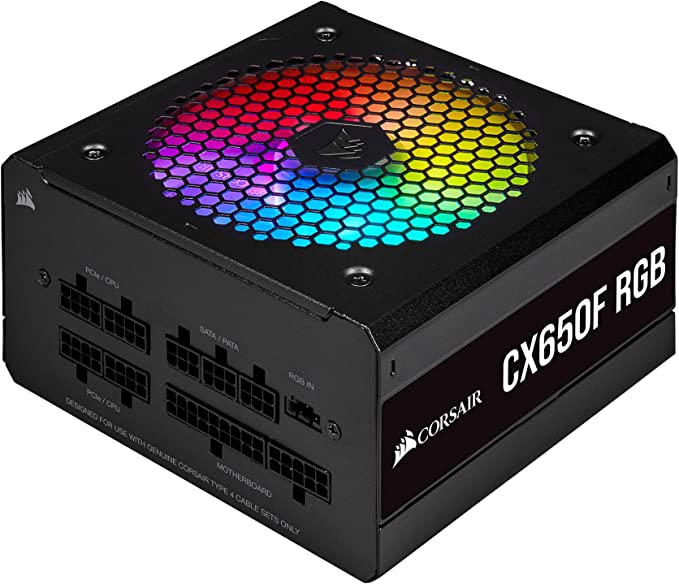
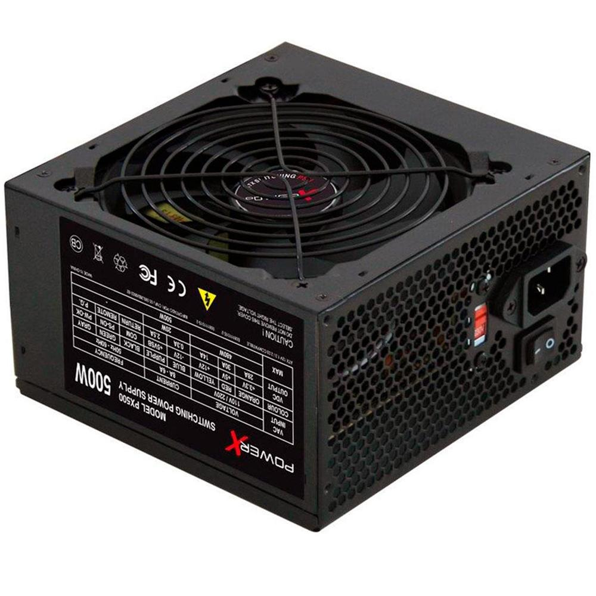
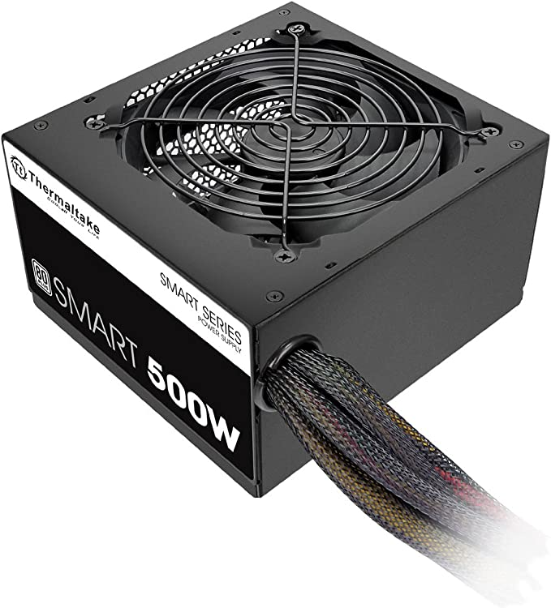

A fonte de alimentação é um componente fundamental para a máquina. É nela que irá ocorrer o processo de transformação de
energia para que todo o sistema funcione sem problemas.
As fontes de alimentação possuem função principal de transformar a corrente elétrica da rede, que chega em uma voltagem alta,
para uma voltagem menor, que é a indicada para o hardware do computador. A fonte também garante a estabilidade da voltagem. A
rede elétrica pode sofrer variações, o que pode ser prejudicial se ligada diretamente aos componentes.
Em caso de apagões ou instabilidades na corrente elétrica, qualquer dano é suportado pela fonte, o que protege os componentes do
PC, como placas de vídeo, memórias RAM, processadores e placa-mãe.
PARA ESCOLHER A MELHOR FONTE DEVEMOS PRESTAR ATENÇÃO NAS SEGUINTES INFORMAÇÕES:
É muito importante que exista compatibilidade com a placa-mãe presente no computador, já que o processador é um pequeno chip
que pode ser encaixado na placa-mãe ou conectado por meio de um soquete.
Ter uma noção do quanto os componentes do PC exigem para funcionar é o primeiro passo para se atentar na hora da escolha de
uma nova fonte.

Fonte Corsair CX650F RGB - 650W, 80 Plus Bronze, Modular, Preto - CP-9020217-NA

R$699,90
À vista
Em até 10x de R$69,99 sem juros!
Fonte PowerX 500W, com Cabo - PX500

R$ 139,99
À vista
Em até 6x de R$ 27,44 sem juros!
Fonte 500W, Thermaltake, PS-SPD-0500NPCWBZ-W

R$369,53
À vista
Em até 7x R$ 52,79 sem juros!